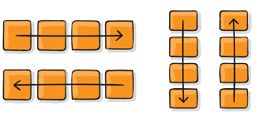

FlexBox
El Módulo de Caja Flexible, comúnmente llamado flexbox, fue diseñado como un modelo
unidimensional de layout, y como un método que pueda ayudar a distribuir el espacio entre
los ítems de una interfaz y mejorar las capacidades de alineación.
La dirección en la que se van ordenando los elementos se llama dirección principal. Una vez agotado el espacio, los elementos se pueden ir ordenando en la
dirección perpendicular a la dirección principal, que se llama dirección secundaria.
Referencias APA
Conceptos Básicos de flexbox - CSS | MDN. (2021, 11 febrero). Mdn Web Docs. https://developer.mozilla.org/es/docs/Web/CSS/CSS_Flexible_Box_Layout/Basic_Concepts_of_Flexbox
Marco, B. S. (2021, 25 octubre). Cajas flexibles (Flexbox). CSS. Páginas web HTML y hojas de estilo CSS. Bartolomé Sintes Marco. www.mclibre.org.mclibre. https://www.mclibre.org/consultar/htmlcss/css/css-flexbox.html
